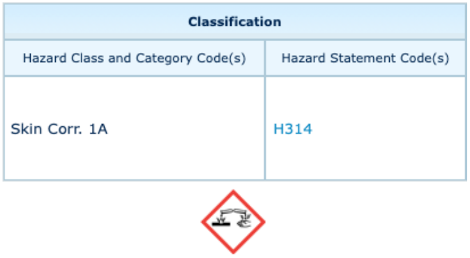

Si on a l'habitude de travailler en solution aqueuse, c'est notamment car ajouter de l'eau dans une solution acide provoque une réaction très exothermique et localisée.
Tout chimiste utilise fréquemment des solutions aqueuses sans nécessairement prendre de grandes précautions. La plus part du temps, on ajoute à cette solution d'autres substances comme des acides. L'acide étant souvent en plus petite quantité c'est celui-ci que l'on verse dans la solution aqueuse et non l'inverse. Cependant, il faut s'intéresser à la manipulation inverse car celle-ci n'est pas sans danger. Pourquoi ? C'est ce que nous allons voir avec les expériences qui suivent. Seront manipulés dans ces expériences les produits suivants : acide sulfurique H2SO4 (aq) (concentré), soude ou hydroxyde de sodium NaOH(aq).
|  |
protocole
Pour commencer, on verse dans une boite de pétri un peu d'eau distillée. On ajoutte quelques gouttes d'acide sulfurique à 95%. On observe à la caméra thermique le résultat de la figure 1.
De la même manière, on verse dans une 2ème boite de pétri un peu d'acide sulfurique à 95% puis on ajoutte quelques gouttes d'eau distillée. On observe à la caméra thermique le résultat de la figure 2.

Figure 1 : caméra thermique lors de l'ajout de gouttes d'acide sulfurique dans l'eau.

Figure 2 : caméra thermique lors de l'ajout de gouttes d'eau dans l'acide sulfurique.
observations et analyse
On remarque dans les deux cas une augmentation de la température, mais celle ci est bien plus importante dans la 2ème expérience. De plus cette augmentation de la température est localisée à la surface dans ce dernier cas.
L'équation mise en jeu ici est la suivante: H2O(l) + H2SO4 (aq) = H3O+(aq) + HSO4-(aq) Propriétés de H2SO4 (aq) : diacide pKa1 = -3,0 ; pKa2 = 1,9 (donc 1ère acidité forte)[2]. On a la réaction d'un acide fort avec de l'eau donc par définition la réaction est totale et la constante de réaction vaut K°=Ka1=103!
On peut également considérer la deuxième acidité de l'acide sulfurique avec cette réaction : 2H2O(l) + H2SO4 (aq) = 2H3O+(aq) + SO42-(aq) Cette fois ci on ne peut considérer la réaction comme totale car l'acide intermédiaire HSO4-(aq) n'est pas fort ! La constante de réaction vaut : K°=Ka1Ka2=101,1. On peut difficilement considérer cette réaction comme quantitative.
Quelques données : ΔfH°(H2SO4 (aq))=-814,3 kJ.mol-1 ; ΔfH°(H2O(l))=-285,8 kJ.mol-1 ; ΔfH°(H3O+(aq))=0 kJ.mol-1 (par convention) ; ΔfH°(HSO4-(aq))=-887 kJ.mol-1 ; ΔfH°(SO42-(aq))=-909,0 kJ.mol-1
Calcul de l'enthalpie standard de la 1ère réaction [5][6][7]: ΔrH°(T=300K)=-ΔfH°(H2O(l))-ΔfH°(H2SO4 (aq))+ΔfH°(H3O+(aq))+ΔfH°(HSO4-(aq))=285,8+811,3-887,3=. On a une réaction grandement exothermique. Pour ce qui est de la localisation, l'acide sulfurique est plus dense (d=1,83 [3]) que l'eau (d=1,00). Ainsi les gouttes d'eau versées dans la 2ème expérience réagissent à la surface. Inversement, les gouttes d'acide dans l'expérience 1 tombent au fond de la boite de pétri (toujours dû à la différence de densité) tout en réagissant, la surface de contact est donc plus importante, l'augmentation de température résultant de la réaction est donc répartie sur une plus grande surface et la dilution permet de dissiper une partie de la chaleur créée [4].
d'autres expériences
Si mettre de l'eau dans de l'acide est dangereux, on peut également se demander si cela est vrai pour l'eau dans une base. De même pour de l'acide dans une base et inversement, une base dans de l'acide.
Les observations sont compilées dans le tableau suivant. La vidéo présente ce que l'on obtient lorsqu'on ajoutte des gouttes d'acide sulfurique concentré dans de la soude concentrée.

Figure 3 : tableau résumant l'interaction entre les différentes solutions.
Figure 4 : vidéo de l'ajout de gouttes d'acide sulfurique dans de la souded concentrée.
Les réactions eau dans une base forte et base forte dans l'eau amènent aux mêmes conclusions que l'analyse précédente. En revanche, lorsque l'on dépose des gouttes d'acide fort dans une base forte la réaction est bien plus importante (voir vidéo).
En effet, la réaction est alors modélisable par : H2SO4 (aq) + 2 NaOH(aq) = 2 H2O(l)+Na2SO4 (s) de constante thermodynamique K° = Ka1Ka2/Ke = 1015,1 >> 1 ce qui correspond aux deux réactions suivantes : la 1ère acidité de H2SO4 (aq) et l'inverse de l'autoprotolyse de l'eau. La réaction est donc favorisée. En effet, on constate bien qu'au simple contact des gouttes d'acide avec la base la réaction est instantannée.
Quelques données : ΔfH°(H2SO4 (aq))=-814,3 kJ.mol-1 ; ΔfH°(H2O(l))=-285,8 kJ.mol-1 ; ΔfH°(NaOH(aq))=-470,11 kJ.mol-1 ; ΔfH°(Na2SO4(s))=-1387 kJ.mol-1
Calcul de l'enthalpie standard de réaction [5][6][7]: ΔrH°(T=300K) = -ΔfH°(H2SO4 (aq))-2ΔfH°(NaOH(aq))+2ΔfH°(H2O(l))+ΔfH°(Na2SO4 (aq))=-204,1kJ.mol-1. Cette valeur prouve l'importante exothermiticité de cette réaction. Ici en revanche, on n'observe aucune différence notable à verser l'acide dans la base ou la base dans l'acide car quelque soit la différence de densité, la réaction est si rapide que les mouvements convectifs n'ont quasiment pas le temps d'avoir lieu.
Lors de l'interaction entre la base et l'acide on entendant bien sur la vidéod de la figure 4 des petites explosions. On peut les expliquer par des explosions thermiques, la chaleur produite par la réaction est soudaine et libérée brutalement [8].
Conclusion
Cette expérience prouve qu'il est dangereux de manipuler de l'acide concentré. Dès que l'on manipule des acides forts ou bases fortes avec des solutions acqueuses, il faut s'attendre à des réactions quantitatives et exothermiques. Si quelques gouttes d'eau tombent dans un bécher rempli d'acide, la température augmentera fortement et rapidement. De plus, des projections sont à prévoir. De telles solutions concentrées sont très irritante pour la peau.
De plus, des projections sont possibles lors du contact des deux constituants physico-chimiques.
Bien évidemment, une réaction entre un acide fort et une base forte est encore plus exothermique et donc bien plus dangereux. Il est donc primordial de porter blouse, lunettes, gants et bien évidemment masque si vous lisez cet article en période COVID. De plus, pour limiter les risques ont peut augmenter la surface de contact entre les deux liquides, on peut alors favoriser des récipients larges ou manipuler sous agitation bien que la réaction est instantanée.